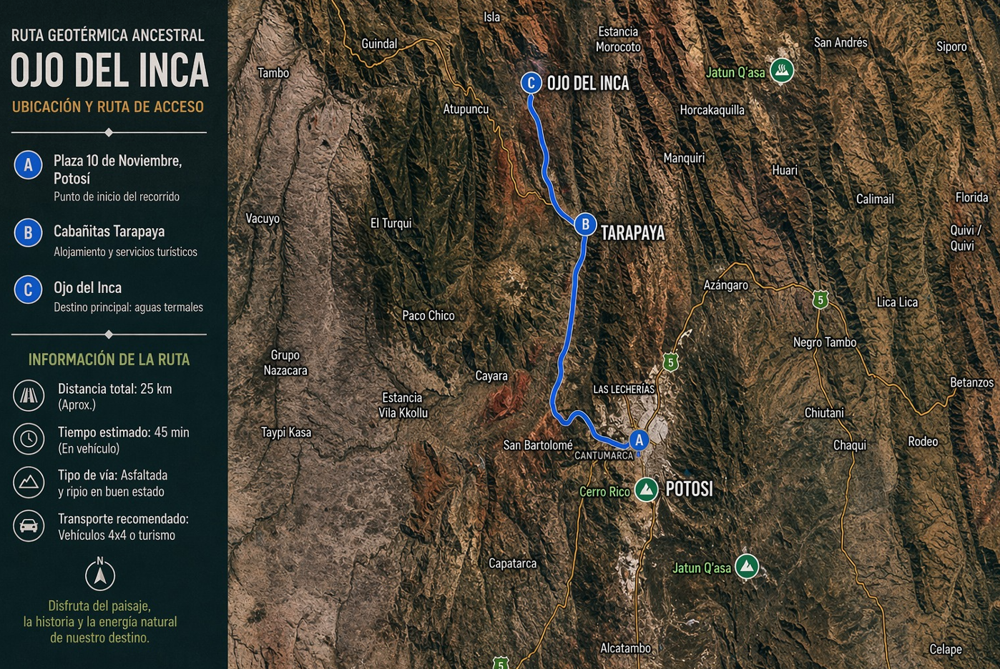

Bienestar, naturaleza y cultura andina
Vive una experiencia única en el Ojo del Inca combinando bienestar, naturaleza y conexión cultural. Este paquete incluye actividades como senderismo interpretativo, yoga, baños termales y una experiencia nocturna con fogata y cosmovisión andina.

Ruta del recorrido desde Potosí hacia Tarapaya, incluyendo el acceso al Ojo del Inca y las zonas de experiencia.
14:00 – 14:30 | Encuentro e inicio de experiencia
Nos reunimos en la Plaza 10 de noviembre para dar inicio a esta aventura. Recibirás un kit de bienvenida y una breve introducción sobre el recorrido y la importancia de conservar este ecosistema único.
14:30 – 15:30 | Traslado a Tarapaya
Viaje panorámico donde el paisaje urbano se transforma en la majestuosidad del altiplano boliviano.
15:30 – 16:00 | Check-in en Cabañitas Tarapaya
Acomodación en un entorno acogedor rodeado de naturaleza. Tiempo breve para prepararte para la caminata.
16:00 – 16:30 | Senderismo al Ojo del Inca
Caminata interpretativa disfrutando paisajes únicos y flora característica del altiplano.
16:30 – 17:00 | Historia y geoturismo
Descubre el origen volcánico del Ojo del Inca y su conexión con la cultura andina.
17:00 – 17:45 | Sesión de yoga
Relajación y conexión con el entorno a través de ejercicios suaves adaptados a la altura.
17:45 – 19:00 | Baño termal terapéutico
Disfruta de las aguas cálidas ricas en minerales, ideales para la relajación física y mental.
19:00 – 20:30 | Ritual nocturno y fogata
Una experiencia mágica con relatos andinos, fogata y observación de estrellas reflejadas en la laguna.
20:30 – 22:00 | Cena andina
Cena nutritiva para recargar energías en un ambiente cálido y natural.
22:00 | Descanso
Pernoctación en cabañas.
08:00 – 09:00 | Desayuno energético
Productos locales frescos para comenzar el día con energía.
09:00 – 11:00 | Sauna mineral
Experiencia de desintoxicación y relajación complementaria a las aguas termales.
11:00 – 12:00 | Naturaleza y fauna
Tiempo para caminata ligera y observación de fauna andina como llamas, vicuñas y aves.
12:00 – 13:00 | Almuerzo de despedida
Sabores tradicionales bolivianos para cerrar la experiencia.
13:00 – 14:00 | Retorno a Potosí
Viaje de regreso compartiendo impresiones del recorrido.
14:00 | Fin del servicio
Llegada a la Plaza 10 de noviembre.
⚠️ Nota: El itinerario puede ajustarse según condiciones climáticas o necesidades del grupo.
Las cabañitas de Tarapaya ofrecen un espacio acogedor y tranquilo ideal para descansar en medio del paisaje andino. Cuentan con áreas de descanso, sauna, piscina atemperada, jacuzzi y espacios recreativos, brindando una experiencia completa de bienestar y conexión con la naturaleza.
Contacto: 72282240 - 72728664